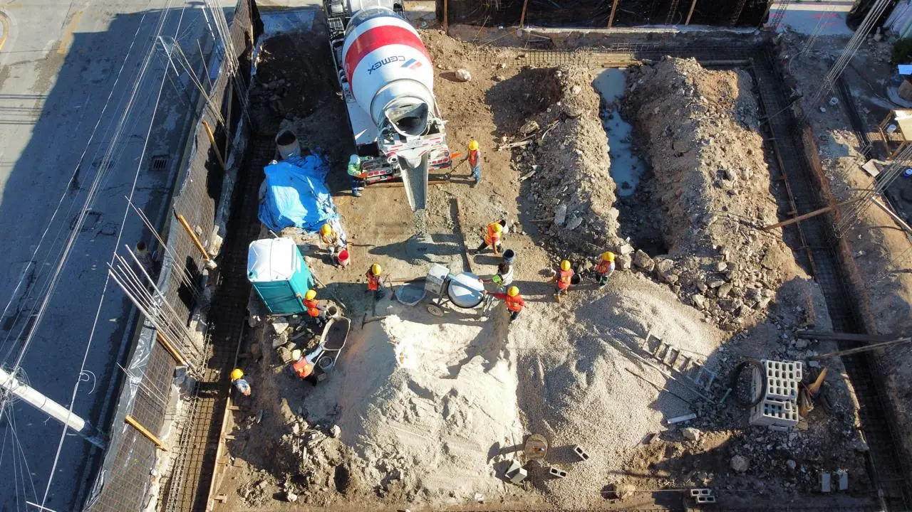

Salt, sand and rain keep cars in Chetumal dirty, and membership car washes have become one of the steadiest small-format investments. We build express tunnel car washes, self-serve bays and detailing centres for investors and franchisees: site, building, tunnel equipment installed with the supplier, water recycling, vacuums, queuing lanes and the permits for discharge.

Building, conveyor pit and equipment installed with the supplier.
Reclaim tanks, filtration and treatment that reuse up to 80% of water.
Bays with high-pressure equipment, payment and lighting.
Central vacuum systems with covered stalls.
Queuing lanes, pay stations and entry/exit approved by the municipality.
Oil and sand separators and discharge permits.
A tunnel's revenue depends on how many cars can queue off the street and how fast they get through. We test the site layout for stacking, turning and exit before design, then size the tunnel length and equipment to the volume you plan.
Water and discharge decide both the permits and the operating cost. Reclaim tanks, separators and filtration let a wash reuse most of its water, meet discharge limits and keep running when the network is short.
Chetumal is the state capital and a border city with year-round local demand from government, education, health and trade. Costs run about 8% below Cancún, land is cheaper, and projects are financed more locally.
Licences are issued by the municipality of Othón P. Blanco; we file the land use, construction licence with DRO and Civil Protection.
| Item | Cost |
|---|---|
| Tunnel car wash building, per m² | $11,000–$18,000 |
| Tunnel equipment, 30–40 m | $8.3M–$18.4M |
| Self-serve bay, each | $0.8M–$1.7M |
| Water recycling system | $1.4M–$3.7M |
| Express tunnel with free vacuums, complete site | $20.2M–$41.4M |
| Hand-wash / detailing centre, 300 m² | $2.8M–$6.4M |
In Chetumal: Data centre construction · Sports complexes & stadiums · Veterinary hospital construction · Funeral homes & crematoria · Clinical labs & imaging centres · Commercial construction
Car wash construction in other towns: Cancún · Playa del Carmen · Puerto Morelos
Related: Data centre construction · Car wash construction
Commercial cost calculator · Plazas · Offices
Gas stations
Send the plans or the lot; we visit, check land use and permits, and send a line-item budget. Reply in 2 minutes.
Quote on WhatsAppFideicomiso: how foreigners own coastal property · Buying land in Mexico: due diligence · Concierge construction service · Managing a build from abroad · Build or buy in Playa del Carmen? · How long a build takes in Mexico · Contractor stopped? Finishing a stalled build · Closing on property: process and costs · Where to build: area by area · Cost to build a house in Mexico · Land use, COS and CUS · Soils studies on limestone
Your review helps other owners decide, and helps us improve.
Write a reviewRead our Google reviews